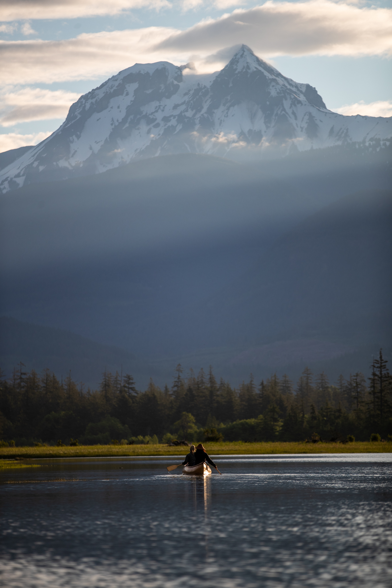

Squamish, BC · Browning Lake (Murrin Park)
A small lake under granite cliffs in Murrin Provincial Park. It's compact, quiet and beautiful in evening light. Up to 3 paddlers per canoe.
Home › Where to Paddle › Browning Lake
Paddling Browning Lake
Browning Lake is the centrepiece of Murrin Provincial Park, right beside the Sea to Sky Highway just south of Squamish. Climbers know the park for its crags. Paddlers know it for a pocket of calm water surrounded by rock walls and forest.
It's a short paddle rather than a big day out, which makes it a perfect after-work or evening outing, or a calm stop on the drive up from Vancouver.
Best for: Evening paddles, short outings, couples, photographers.
Local Knowledge
Go in the evening, when the cliffs light up.
Parking is limited on busy days, and delivery saves you hauling a boat from the lot.
Combine it with a short walk on the park trails.
Good to Know
Yes. We deliver to Browning Lake in Murrin Park and pick up when you're finished.
It's small. Think an hour or two on the water, not a full day. That's part of its charm.
Yes. It's sheltered flatwater with no current or tide.
See all our Squamish canoe delivery spots, or browse every place we deliver.
Ready?
Pick your date, tell us it's Browning Lake, and we'll have the canoe waiting at the launch.
Or email squamishcanoerental@gmail.com